10. BImSchV
Ausfertigungsdatum: 08.12.2010
Vollzitat:
"Verordnung über die Beschaffenheit und die Auszeichnung der Qualitäten von Kraft- und Brennstoffen vom 8. Dezember 2010 (BGBl. I S. 1849), die zuletzt durch Artikel 1 der Verordnung vom 28. Mai 2024 (BGBl. 2024 I Nr. 169) geändert worden ist"
| Stand: | Zuletzt geändert durch Art. 1 V v. 28.5.2024 I Nr. 169 |
(+++ Textnachweis ab: 14.12.2010 +++)
(+++ Amtlicher Hinweis des Normgebers auf EG-Recht:
Umsetzung der
EGRL 70/98 (CELEX Nr: 31998L0070)
EGRL 32/99 (CELEX Nr: 31999L0032)
Beachtung der
EGRL 34/98 (CELEX Nr: 31998L0034)
Umsetzung der
EGRL 70/98 (CELEX NR: 31998L0070) vgl. V v. 28.5.2024 I Nr. 169
EURL 2016/802 (CELEX NR: 32016L0802) vgl. V v. 28.5.2024 I Nr. 169
Notifizierung gem. der
EURL 2015/1535 (CELEX NR: 32015L1535) vgl. V v. 28.5.2024 I Nr. 169
+++)
| § 1 | Begriffsbestimmungen |
| § 2 | Chlor- und Bromverbindungen |
| § 3 | Anforderungen an Ottokraftstoffe; Bestandsschutzsortenregelung |
| § 4 | Anforderungen an Dieselkraftstoff, paraffinischer Dieselkraftstoff, Gasöl und andere flüssige Kraftstoffe; Bestandsschutzsortenregelung; Schwefelgehalt; Verwendung für Binnenschiffe und Sportboote |
| § 5 | Anforderungen an Biodiesel |
| § 6 | Anforderungen an Ethanolkraftstoff (E85) |
| § 7 | Anforderungen an Autogas |
| § 8 | Anforderungen an Erdgas und Biogas als Kraftstoffe |
| § 9 | Anforderungen an Pflanzenölkraftstoffe |
| § 9a | Anforderungen an Wasserstoff als Kraftstoff |
| § 10 | Schwefelgehalt von Heizöl |
| § 11 | Gleichwertigkeitsklausel |
| § 12 | Einschränkungen |
| § 13 | Auszeichnung von Kraft- und Brennstoffen |
| § 14 | Nachweisführung |
| § 15 | Bekanntmachung der Kraftstoffqualität für den Betrieb von Kraftfahrzeugen |
| § 16 | Ausnahmen |
| § 17 | Zugänglichkeit der Normen |
| § 18 | Überwachung |
| § 19 | Einfuhr von Heizöl, Schiffskraftstoff und Dieselkraftstoff |
| § 20 | Ordnungswidrigkeiten |
| § 21 | Übergangsvorschriften |
| § 22 | Inkrafttreten, Außerkrafttreten |
| Anlage 1 | Zeichen Super (zu § 13 Absatz 1 Satz 1 Nummer 1) |
| Anlage 2 | Zeichen Super Plus (zu § 13 Absatz 1 Satz 1 Nummer 1) |
| Anlage 3 | Zeichen Super E10 (zu § 13 Absatz 1 Satz 1 Nummer 2) |
| Anlage 4 | Zeichen Super Plus E10 (zu § 13 Absatz 1 Satz 1 Nummer 2) |
| Anlage 5 | Zeichen Diesel (zu § 13 Absatz 1 Satz 1 Nummer 3) |
| Anlage 6 | Zeichen Diesel B10 (zu § 13 Absatz 1 Satz 1 Nummer 4) |
| Anlage 7 | Zeichen Paraffinischer Diesel XTL (zu § 13 Absatz 1 Satz 1 Nummer 5) |
| Anlage 8 | Zeichen Biodiesel (zu § 13 Absatz 1 Satz 1 Nummer 6) |
| Anlage 9 | Zeichen Ethanolkraftstoff (E85) (zu § 13 Absatz 1 Satz 1 Nummer 7) |
| Anlage 10 | Zeichen Autogas (zu § 13 Absatz 1 Satz 1 Nummer 8) |
| Anlage 11 | Zeichen Erdgas und Biogas als Kraftstoff – CNG Gruppe H (zu § 13 Absatz 1 Satz 1 Nummer 9 Buchstabe a Doppelbuchstabe aa) |
| Anlage 12 | Zeichen Erdgas und Biogas als Kraftstoff – CNG Gruppe L (zu § 13 Absatz 1 Satz 1 Nummer 9 Buchstabe a Doppelbuchstabe bb) |
| Anlage 13 | Zeichen Erdgas und Biogas als Kraftstoff – LNG Gruppe H (zu § 13 Absatz 1 Satz 1 Nummer 9 Buchstabe b Doppelbuchstabe aa) |
| Anlage 14 | Zeichen Pflanzenölkraftstoff – Rapsöl (zu § 13 Absatz 1 Satz 1 Nummer 10) |
| Anlage 15 | Zeichen Pflanzenölkraftstoff – alle Saaten (zu § 13 Absatz 1 Satz 1 Nummer 11) |
| Anlage 16 | Zeichen Wasserstoff (zu § 13 Absatz 1 Satz 1 Nummer 12) |
| Anlage 17 | Erklärung des Herstellers, Vermischers oder Lieferanten über die Beschaffenheit flüssiger Kraft- und Brennstoffe (zu § 18 Absatz 2 Satz 4) |
| 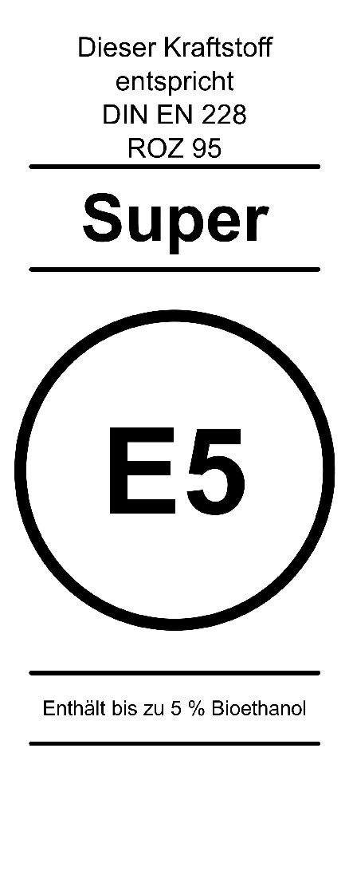 |  |
| Teil a | Teil b |
| 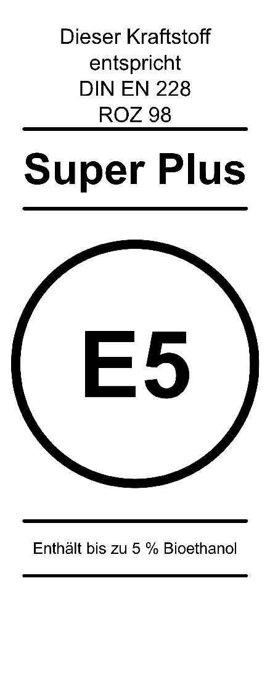 |  |
| Teil a | Teil b |
| 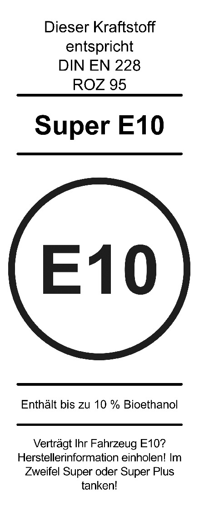 | |
| Teil a | Teil b |
| 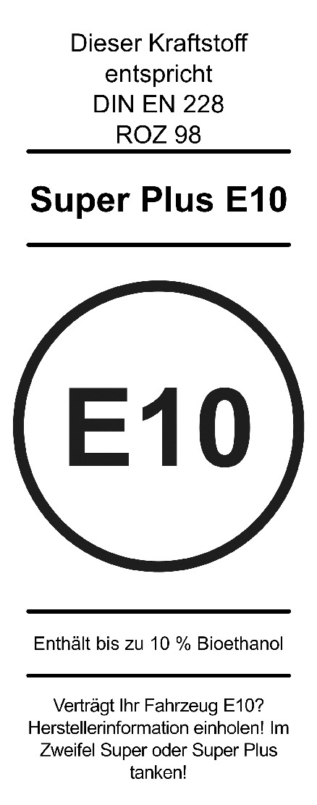 |  |
| Teil a | Teil b |
| 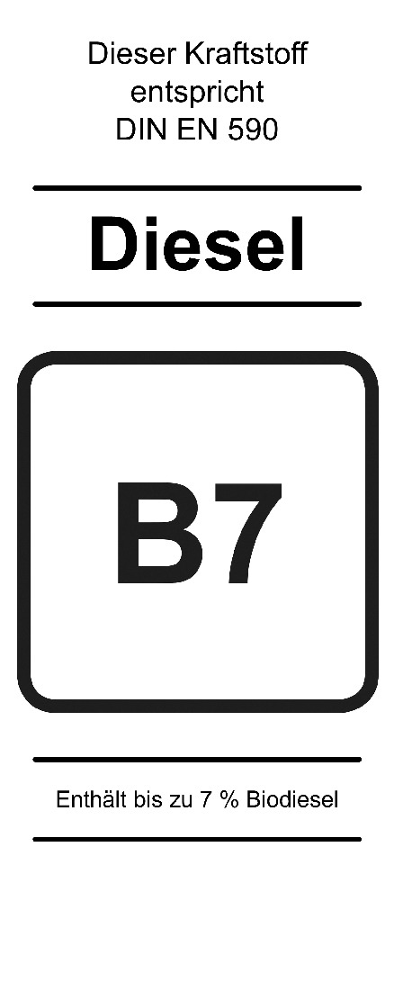 | |
| Teil a | Teil b |
| 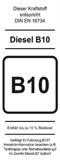 | |
| Teil a | Teil b |
| 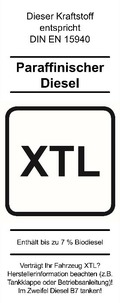 | |
| Teil a | Teil b |
| Teil a | Teil b |
| 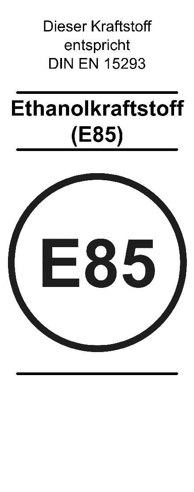 | |
| Teil a | Teil b |
| 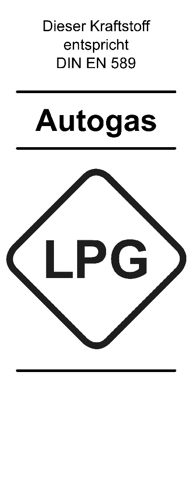 | 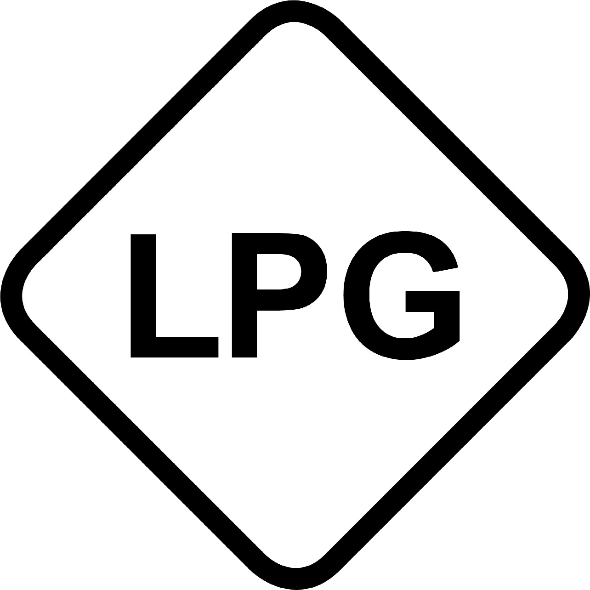 |
| Teil a | Teil b |
| Teil a | Teil b |
 | |
| Teil a | Teil b |
| Teil a | Teil b |
| Teil a | Teil b |
 | |
| Teil a | Teil b |
| 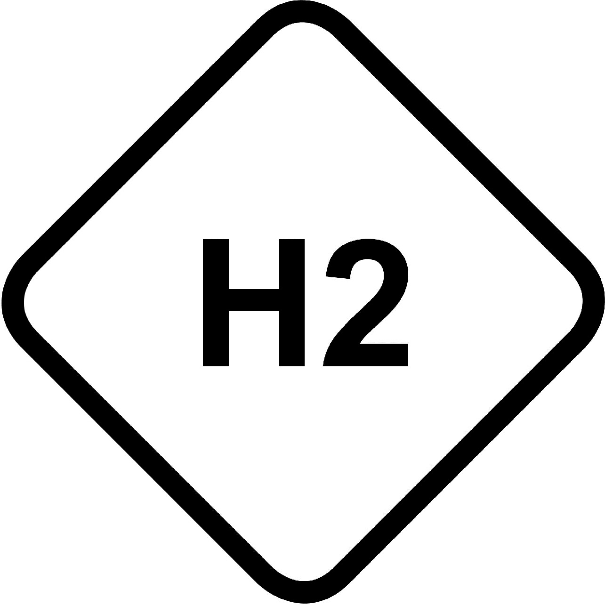 | |
| Teil a | Teil b |
| Dieselkraftstoff gemäß § 1 Absatz 4 | Gasöl für den Seeverkehr gemäß § 1 Absatz 6 | Schiffsdiesel gemäß § 1 Absatz 7 | Sonstige Schiffskraft-stoffe gemäß § 1 Absatz 8 | Leichtes Heizöl gemäß § 1 Absatz 9 | Schweres Heizöl gemäß § 1 Absatz 10 | ||
|---|---|---|---|---|---|---|---|
| Menge in t | |||||||
| erster Bestimmungsort der Sendung | |||||||
| Kenndaten | |||||||
| a) | Dichte bei 15 Grad C nach DIN EN ISO 3675* , Ausgabe November 1999, oder nach DIN EN ISO 12185 (Referenzverfahren), Ausgabe November 1997, in kg/cbm; bei schwerem Heizöl nach DIN 51757, Ausgabe Januar 2011, in kg/cbm: | ||||||
| b) | Viskosität in mm2/s: | bei 40 Grad C nach DIN EN ISO 3104, Ausgabe Januar 2021 | bei 40 Grad C nach DIN EN ISO 3104, Ausgabe Januar 2021 | bei 40 Grad C nach DIN EN ISO 3104, Ausgabe Januar 2021 | bei 40 Grad C nach DIN EN ISO 3104, Ausgabe Januar 2021 | bei 20 Grad C nach DIN 53000-1, Ausgabe Juli 2023 | bei 100 und 150 Grad C nach DIN EN ISO 3104, Ausgabe Januar 2021, nach DIN 51366, Ausgabe Dezember 2013, oder nach DIN 53000-1, Ausgabe Juli 2023 |
| c) | Siedeverlauf; aufgefangene Destillatmenge in Vol.-%: | nach DIN EN ISO 3405, Ausgabe September 2019, oder nach DIN EN ISO 3924, Ausgabe Dezember 2019: bis 180 Grad C: bis 340 Grad C: | nach DIN EN ISO 3405, Ausgabe September 2019: bis 250 Grad C: bis 350 Grad C: | ||||
| d) | Schwefelgehalt | nach DIN EN ISO 20846, Ausgabe Dezember 2019, oder nach DIN EN ISO 20884, Ausgabe Januar 2022, oder nach DIN EN ISO 13032, Ausgabe Juni 2012, in mg/kg: | nach DIN EN ISO 8754, Ausgabe Dezember 2003, oder nach DIN EN ISO 14596, Ausgabe Dezember 2007, in Gew.-%: | nach DIN EN ISO 8754, Ausgabe Dezember 2003, oder DIN EN ISO 14596, Ausgabe Dezember 2007, in Gew.-%: | nach DIN EN ISO 8754, Ausgabe Dezember 2003, oder nach DIN EN ISO 14596, Ausgabe Dezember 2007, in Gew.-%: | nach DIN EN ISO 8754, Ausgabe Dezember 2003, oder nach DIN EN ISO 14596, Ausgabe Dezember 2007, in % (m/m) oder in mg/kg; bzw. bei Auszeichnung als „Schwefelarm“ nach DIN EN ISO 20846, Ausgabe Dezember 2019, oder DIN EN ISO 20884, Ausgabe Januar 2022, in % (m/m) oder mg/kg: | nach DIN 51400-3, Ausgabe Juni 2001, nach DIN EN ISO 8754, Ausgabe Dezember 2003, oder nach DIN EN ISO 14596, Ausgabe Dezember 2007, in Gew.-%: |
| e) | Stickstoffgehalt | bei Auszeichnung als „Stickstoffarm“ nach DIN 51444, Ausgabe Oktober 2020, in mg/kg: | |||||
| Ort, Datum und Nummer der Prüfung: | |
| Hersteller (Name und Anschrift): | |
| Unterschrift: |
| Firmenname und Geschäftssitz: | |
| gelieferte Menge: | |
| Empfänger: | |
| Bestimmungsort: | |
| Ort, Datum: | |
| Unterschrift: |